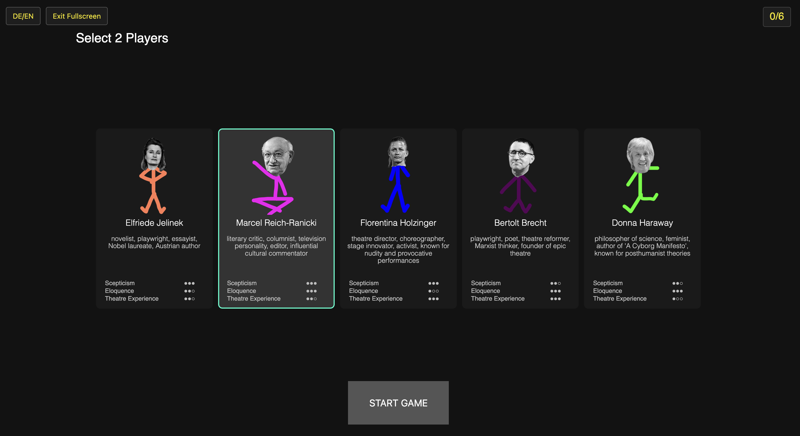
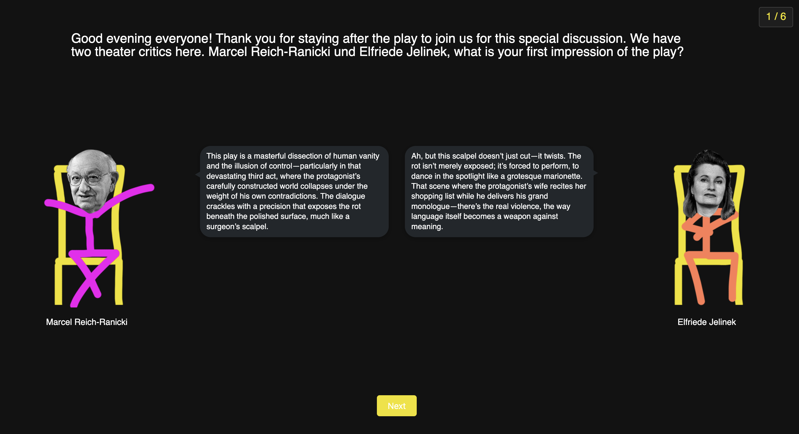

cadavre construit
2026, performative web-game, masterproject
Cadavre Construit
is playfully working with the premise that AI-generated confabulations can be seen as productive
irritations for conceptual theatre processes.
Inspired by the surrealist game of "cadavre exquis" (exquisite corpse), the project explores the
co-creation of a previously non-existent reality in the form of a short play through productive
co-confabulation.
►

